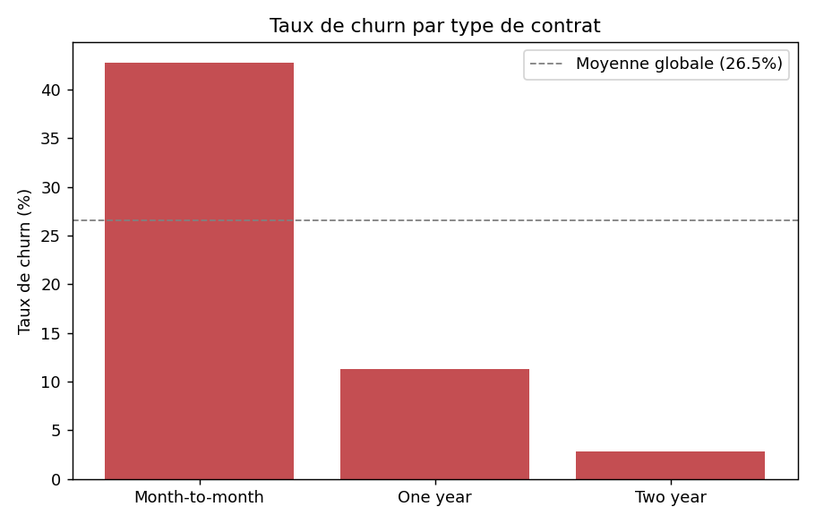
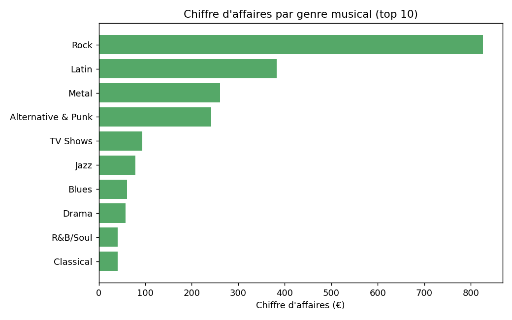
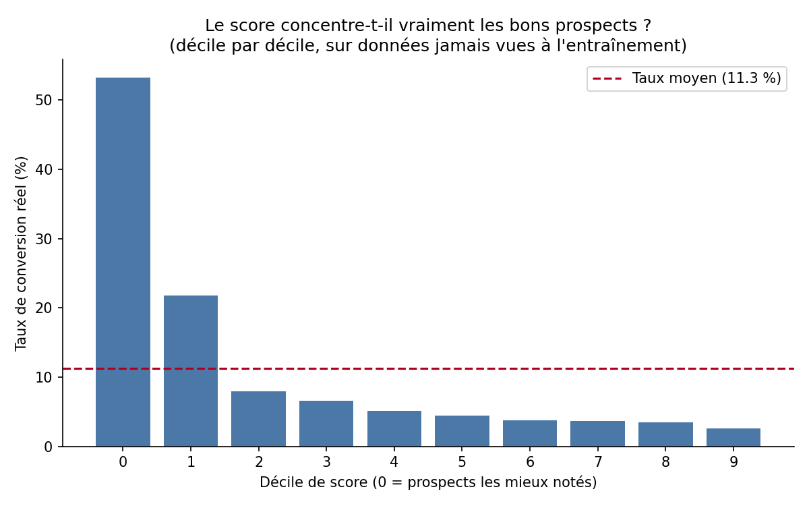
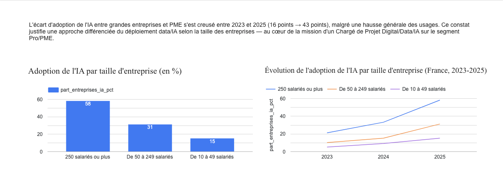
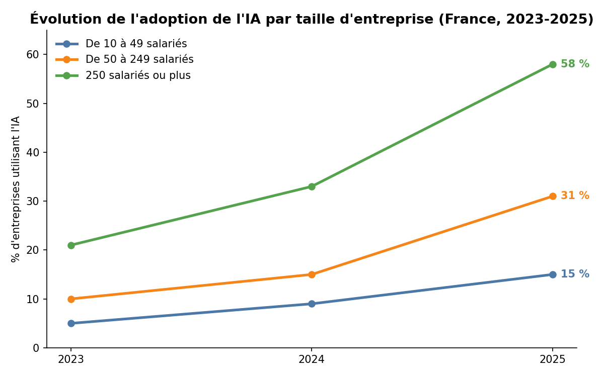
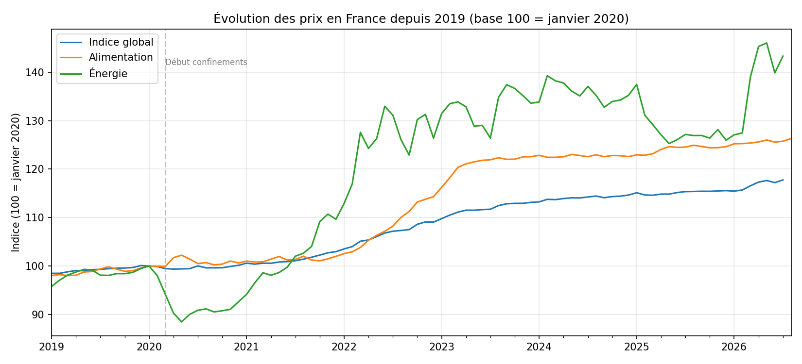

Alvin Kouadio
Analyste Data & Chef de Projet Digital — Alternance 12 mois
Pilotage de projets data en toute autonomie, du cadrage au résultat, pour obtenir une vision concrète des besoins métier et gagner en efficacité sur les tâches pratiques du poste. En Master Marketing Digital, spécialisation Big Data & IA à l'INSEEC PGE, après une Licence Économie et Gestion à l'Université de Lille, j'apprends à transformer des jeux de données en réponse utilisable : Python, SQL, Power BI. Les projets ci-dessous sont des exercices personnels, pas des mandats professionnels — chacun a sa méthode et ses limites assumées, détaillées dans son dépôt.
Projets

Segmentation du risque de résiliation client
Un client sans engagement résilie 15 fois plus souvent qu'un client engagé 2 ans : le type de contrat explique l'essentiel de l'écart, sur 7 000 clients télécom.
Voir le code et la méthode →
Analyse SQL des ventes d'un magasin de musique
Un seul genre musical (le Rock) concentre 35 % du chiffre d'affaires total — écrit en 5 requêtes SQL, des agrégations simples aux fonctions fenêtre.
Voir le code et la méthode →
Scoring de propension B2B
Les 10 % de prospects les mieux notés par le modèle convertissent près de 5 fois plus que la moyenne du portefeuille — en excluant volontairement une variable qui aurait faussé le résultat.
Voir le code et la méthode →
Adoption de l'IA par les PME françaises
L'écart d'adoption entre grandes entreprises et PME est passé de 16 à 43 points entre 2023 et 2025 — il se creuse au lieu de se refermer.
Voir le code et la méthode →
Automatisation d'un pipeline de reporting
Le pipeline se relance seul chaque mois et vérifie le nombre de lignes attendu avant d'enregistrer un résultat — pour ne jamais laisser passer un fichier faux en silence.
Voir le code et la méthode →
Évolution des prix à la consommation en France
Suivi de l'inflation par poste de dépense (alimentation, énergie) depuis 2019 — mon tout premier projet data, repris avec un historique de commits complet.
Voir le code et la méthode →Note de cadrage — scoring IA
Objectifs mesurables, parties prenantes, périmètre, jalons et risques (dont la conformité RGPD) posés avant la première ligne de code, sur un cas fictif.
Voir le document →Suivre un projet après l'avoir cadré
Suite du projet ci-dessus : à la semaine 14 sur 24, un jalon en retard détecté et un dépassement budgétaire de 15 % isolé sur un seul lot grâce au tableau de suivi.
Voir le code et la méthode →